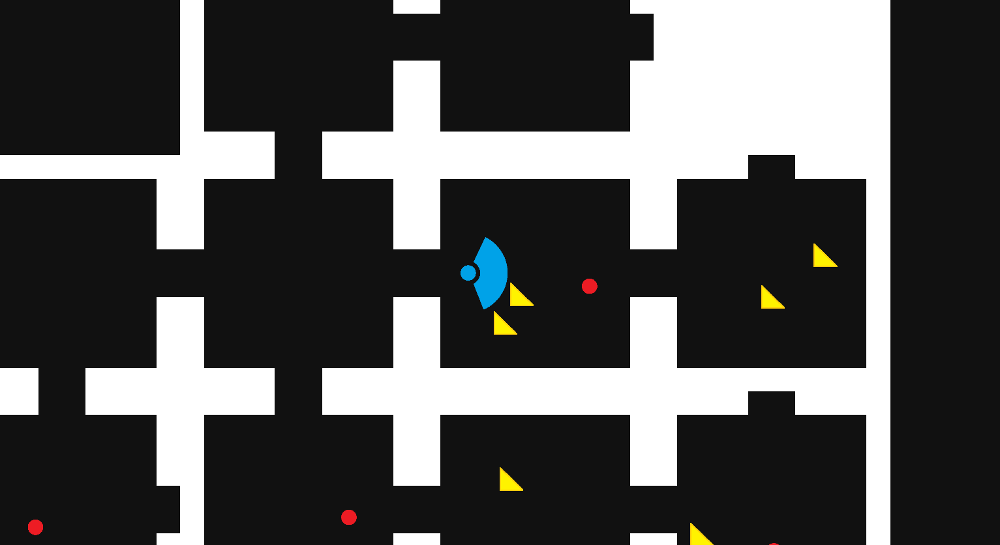

BEHAVIOUR TREE AGENT
Traverses through a procedural level containing treasures and enemies.

Tools Used
- Unity
- C#
- GitHub

About This Project

The idea for this project was based on the hit indie game, Lethal Company. A game where you are playing as a contracted worker for a company with questionable working conditions. You are tasked with exploring abandoned facilities to collect valuable objects and meet a profit quota. However, these facilities have been overrun by various dangerous monsters.
This project is a behavior tree implementation for the behavior of a player in a simplified version of Lethal Company. The behavior tree agent can navigate through a procedural level whilst collecting valuable items and avoiding enemies. These procedural levels are composed of many small rooms branching out in different directions with each room having a random chance to spawn valuables and/or an enemy.
Finished Project Demo

Develpoment
The entirety of this project was made inside the Unity Game Engine. I made this choice because of the engine's simplicity and countless resources provided by the community. If I wanted to know how to use a feature, or, if I was confused with an error, I knew that most likely a resource or solution existed.
I started by creating a system that builds a procedurally generated level of connected rooms. Inside each room, up to 3 treasure can be spawned with an additional chance of spawning an enemy.
For this system, I used a simple method by Blackthornprod. Each possible room was made into a Unity prefab where each door contained spawner objects. The spawner objects are responsible for deciding whether to spawn a new room or not. If a new room is spawned, a random room is selected from a list of prefab rooms. This is continuous until there are no remaining open doors.
I needed to give the agent the ability to pathfind through the procedural level. To accomplish this, I used Unity's built-in NavMesh class. A NavMesh allows me to outline an area that is traversable by an agent. Unity will then use an A* search algorithm to determine the shortest path to a specified location.
I specified every wall to be considered a NavMesh obstacle. This lets the NavMesh Builder know to build the mesh around the walls. For each room that is generated, a built-in method is called to construct a new navmesh that accommodates the new room.
Similar to the player in Lethal Company, I wanted the agent to carry similar constraints. A limited range of sight, which inhibits the player from seeing to far into rooms or down hallways. I gave the agent a fixed range of sight. Additionally, being indefensible against enemies, which forces the player to avoid and maneuver around them. The agent's only defense is also solely maneuvering.
To control the behavior of the agent, I utilized behavior trees. The basic idea of a behavior tree is a directed graph, in the form a tree, containing nodes that control the course of decisions an agent can make. The leaf node of a tree is responsible for carrying out actions. If a node is a parent, then it is responsible for modifying the behavior of its children or altering the route of decisions made.
Simple behavior tree diagram © GameDeveloper
Behavior trees are useful in game development when developing behaviors for non-playable characters (NPC). They are capable of managing multiple complex actions in a simple and organized structure.
For the behavior tree's architecture, I used an implementation by Mina Pêcheux. The tree itself points to a root node and runs an update loop each frame. Each node inherits a base node class which contains a virtual evaluation function that can be overwritten with custom instructions for any specific node. Any node can parent other nodes and even store data.
I used this architecture to develop my own nodes for the AI. I designed the behavior to constantly explore unvisited rooms and collected treasure found in its line of sight. However, if an enemy is detected, the AI will retreat back to the start and explore a new path. This cycle will continue until there are no more accessible unexplored rooms.
Behavior tree diagram for this project

Final Thoughts
This project was a massive challenge. I had very little experience in Unity and was on a large time constraint. As someone who is widely interested in game development, I'm glad to have learned a lot about the concepts used in this project. I found enjoyment learning Unity and C# and would like to continue using them for future projects.